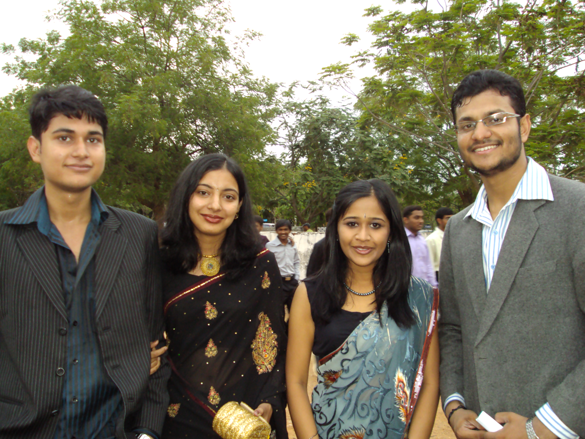
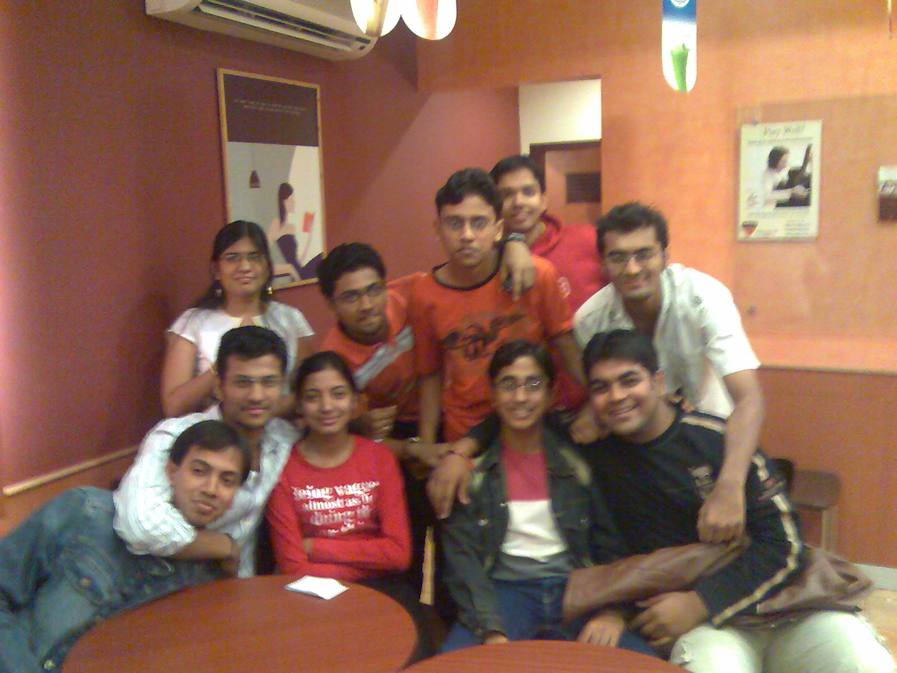
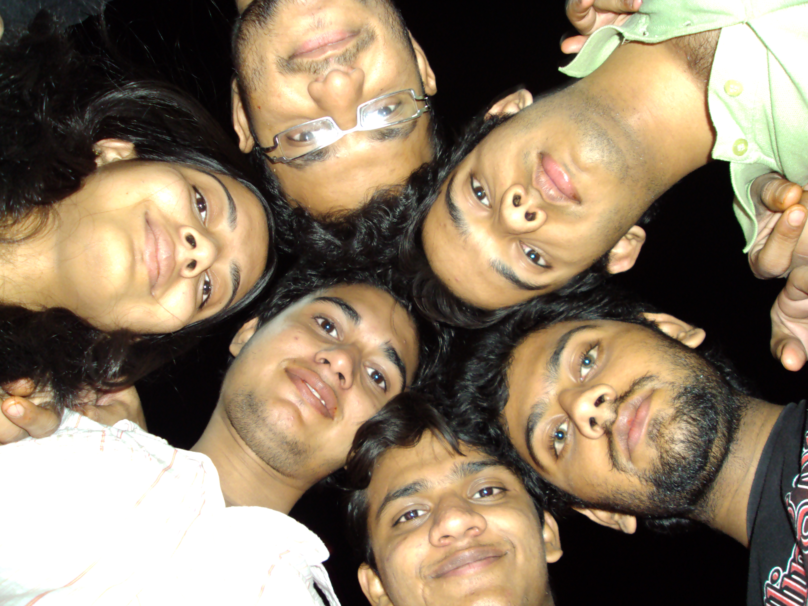

The Yearbook - Commemorating 2005-09!
Prashasti Gupta's profile information
Name - Prashasti GuptaBirthday - 07-02-1988
Email - prashastigupta@gmail.com
Address - Mandla,M.P
Phone - 9948492513
Hobbies - these days...watching sitcoms and movies
WishList - home theatre, lancer,trip to paris
Memorabilia - Felicity-08...last day..after DJ
What would you want to be remembered as - Prashasti :)-unique name:D
Future Plans - hmm...,job...then PG,..then job...
Testimonials written by Prashasti Gupta
Prashasti Gupta's Album

{kind=link}
4

{kind=link}
coffee

{kind=link}
friends
Testimonials
Abhinav Parashar wrote-One of a few girls I hv ever talked from our batch
 ... Really a fodu and sensible bandi. A good speaker ... had some discussion forums together ...
... Really a fodu and sensible bandi. A good speaker ... had some discussion forums together ...
Wish u a bright future ahead ... May god Bless
 !!
!!Randeep Singh Banga wrote-
Prashasti: The first to get placed oncampus in CSE batch...d statement in itself tells u quite a bit abt her...to elaborate she's a very dedicated person...very studious too...very patient...very calm and collective...down to earth...greets all wid a wide smile...
i remember her making points in d FSIS sessions in 1st year, her perspective of d world shows d maturity in her...and still when u talk to her u get to know her grown up thoughts....she gave a very dedicated supporting hand at d time of placements...she was of d few who wld b thr to willingly volunteer as erly as 5AM...w/o any incentives...a total commitment for service...

u've got a great job at hands and i'm very sure u'l raise to new heights in d next phase of ur life...wish u all d best
STAY IN TOUCH

Pankaj Anthwal wrote-
Amazing sportsperson
(Vayu's backbone for 4 years in sports ) and a thoroughly professional academician  , Prafafti is one person I have seen excel in every endeavour that she has undertaken.
, Prafafti is one person I have seen excel in every endeavour that she has undertaken.  She is someone who never looked perturbed anytime in all these years, and all throughout has been a very calm and composed personality, someone you would always want to resort to when in deep waters. Unfortunately, I never knew her well enough to actually go ahead and take her advice on any matter
She is someone who never looked perturbed anytime in all these years, and all throughout has been a very calm and composed personality, someone you would always want to resort to when in deep waters. Unfortunately, I never knew her well enough to actually go ahead and take her advice on any matter 
I have always felt that you are a very sensitive [which is not a weakness
] person. Be like that always
You have a wonderful future ahead
. Go out there, make all the moments count and have a wonderful life from here on Aniket Sharma wrote-
It was really nice of you to have thought about me on the last day of writing testimonials.
You're an admirable girl. Apni zyada kabhi dosti hui nahi, but uska reason I guess lack of opportunity hi tha, more than lack of anything. We meet so many good people in life, physically not possible to make friends with all of them. Bas yehi raha apne saath bhi. Not that I regret that or anything like that. Having sooo many good people like you around is one of the beauties of life.
I like the way you seem to handle so many things effortlessly. I have great respect for your scholarship. More than that, I have a respect for your athletic abilities. You were the first woman Sports Captain in IIIT. You thoroughly deserved that position. It was an honor to compete with you. I would always, always have respected whatever you might have said at that time, even if it were against our house.
All the best for life. I'm sure you'll do great.
Memories: Our first interaction, during play practice, in which you refused to give me Deepti and Namrata's phone nos. The dignity with which you handled yourself every time when there were excess of guys around, not everyone at the best of their behavior.
10 years down the line I see you as:An awesome Project Manager in Amazon or Google, PK's better half.
Tags: Girls, Sports, Vayu, athlete, co-sports captain.
Have a great life.
Peace.
Aniket Sharma wrote-
It was really nice of you to have thought about me on the last day of writing testimonials.
You're an admirable girl. Apni zyada kabhi dosti hui nahi, but uska reason I guess lack of opportunity hi tha, more than lack of anything. We meet so many good people in life, physically not possible to make friends with all of them. Bas yehi raha apne saath bhi. Not that I regret that or anything like that. Having sooo many good people like you around is one of the beauties of life.
I like the way you seem to handle so many things effortlessly. I have great respect for your scholarship. More than that, I have a respect for your athletic abilities. You were the first woman Sports Captain in IIIT. It was an honor to compete with you. I would always, always have respected whatever you might have said at that time, even if it were against our house.
All the best for life. I'm sure you'll do great.
Memories: Our first interaction, during play practice, in which you refuse to give me Deepti and Namrata's phone nos. The dignity with which you handled yourself every time when there were excess of guys around, not everyone at the best of their behavior.
Tags: Girls, Sports, Vayu, athlete, co-sports captain.
Have a great life.
Peace.
Bharat Ram Ambati wrote-
Till second day of placements we never even spoke to each other
. Till then all i know about her is highly studious, frenly, jovial person and one and one hope of OUR VAYU house in inter house events. I still remember those first words. "Bharat as a volunteer u are close to amazon people na... Plz recomend my name" . This happened in the morning and by evening she got placed . First one from our batch and the joy everyone over there had is untold. Whenever you need some thing good to be happen just call n talk me ok . Remember u owe a treat to me .
All the best for your future.
Arun M.S.C wrote-
a great athlete.. she is the one i've seen who has great enthusiasm for running..although i don't know u much .. i've seen that u r too great and cool in all activities.. all the best for future sports and life..
cheers.
arun.
Chakrapani wrote-
prashasti...she was just a seat away from me during the classes and my PC partner..she is very cool as u all know..
oohh i'm running out of words to write about you..i can say in one line..
"If i get a chance to go back for 4 years I just want to be what you are..in every aspect.."
I can always say she's the only girl in iiit being pretty,so cool with a pleasant smile..
Ps:: this is not just a reply..real feelings right from the buttom of my heart..
PS :: i'm sry if there are any mistakes..
All the best for ur future!!!!
Siva Reddy wrote-
I thought I will be the first one to write testimonial for you before you write to me. But you know competing with you is very tuff.
prashasti is the name which is a near synonym to perfection. I feel it so. be it in academics, sports, or cultural etc.
I used to see her in reading room most of the times. I am just a visitor but she lives there I guess
Here went our first interaction where she asked me to keep a watch on her lappy.
She is the girl who everyone in the class expects big things for her. Everyone has high expectations for her. OMG she is the topper of DBMS I guess where I hardly managed to get marks. Take these
The next interaction of her is during placements. She is very kind in helping others. I used to wonder how is she so energetic who always have everlasting enthu (she is very lean
but always active). She was very helpful to everyone during placements. Even though I don't know her much, she used to offer me snacks too during placements and used to talk very friendly.
An allrounder. I wonder if I can play that many games and be as good as her. Abhilash ka competitor. I was expecting allrounder award for abhilash or you.
All the best. I am sure that the place which haves you is lucky. IIIT miss you.
bye

Samuel John wrote-
all rounder
best wishes
Aditya Agrawal wrote-
Prashasti is one of the most intelligent people in our batch - I place her amongst the likes of Manish, Somani and Saraswat. Moreover, she is a sweet and simple girl who is going to reach great heights in her life.
I remember the first time I met her in the first sem. While walking towards our hostels after the workspace had closed, Chand introduced me to her and Shikha while going for a coffee. She was one of those simple girl next door stereotypes. However, with the course of time, she has made great stride in her outward personality and has become more suave. It reflects from her talking and dressing ways - from plain salwar suits to urbane shirts and jeans. Although we never became great friends, I have a lot of respect and admiration for her. I can now admit that I also had a slight crush on her during the initial weeks of the 3rd sem
Some memorable incidents - Once playing Truth and Dare at CS, I was given a task to propose her. Gawd, I fared miserably at that.
However the memory of this hilarious incident still manages to make me laugh. Then comes my first year bday treat to her - we could get nothing but a pack of Goodday at the coffee shop
Coming to Placements, I remember the first day well - Microsoft interviews - she was one of the top contenders of getting through the day 1 company and I was quite hopeful. However, it turned outta be a disappointing day for both of us - no one got through. But fate had something else in store for her. She got placed the next day itself. I got a party as well - this time it wasn't a pack of Goodday but a handsome treat at Pizza Hut
After getting placed, she helped me with the placement process on numerous occasions.
Keep in touch!
All the best for your career!
Shikha Aggarwal wrote-
I know this testimonial comes as a surprise to all.
Anyway, this is dedicated to the awesome time we spent together. I still remember those times - we used to follow the "exact" same schedule - slept at same times, went for P.T.(and 'bunked' it) on the same days, went to lab together, came back together, had *every* meal together, of course went for movies and other outings together.... phew! I remember one day she had gone to her local relatives and Prachi asked me shocked "Where is your other half?"

Cheers to those times!!
I don't exactly remember how and when it started, but we drifted (wide) apart over the years. Nevertheless, I think we both know that we both miss those days -- the first sem days -- the group of famous four.
I'll try to enumerate what all I remember from the stay with her. She is a very caring person. She is a person who can maintain her calm and patience in almost any situation, will not react immediately even if she's hurt or sad, will try to listen your side of story, and is quite understanding... But yes don't take her for being fragile, she can 'kick' you (literally) if needed be !!!
It goes without mentioning that she is very sincere and dedicated to her work (I know - sab ko pata hai !!).
Baaki ... she hates it when you say "aur kitna khayegi!!"
I used to scold her for wasting food (hope you don't do it now!!).
I always missed the those lovely times, the outings we went to, the night outs, the movies in labs, the girly-talks, .... and I always will miss them.
And yes .. the fattas we together used to crack!
Period.
All the best girl!
Maruti Borker wrote-
She was in my discussion group, this is where I first met her. First impressions were that she was a mahila mandal activist,
... lol just kidding ... I thought that she was a well mannered "acchi bacchi"types ... she used to speak/debate very nicely at that time . Then we met in Freshers preparation of Vayu house. We had a "nach baliye" group number. Mera to pata nahin, she danced quite well . At that time I was very shy, I felt quite embarrassed to practice the "draupadi entrace" act in the play in front of her and Navatha  ... Kudos to you for winning so many medals for vayu
... Kudos to you for winning so many medals for vayu 
We were part of the same friends circle and had lots of group studying, BC'ing, walks etc. etc. One thing was quite evident that she used to strive for excellence in acads and also try to have fun at the same time.
Innumerable Achievements aur Sports ke baarein mein aur kya hi bolun baaki sab ne bol hi diya hai ...
Final impressions are that she is fun-loving person, hardworking and dedicated to her priorities in life . And yes were easy to irritate
. Bengaluru mein maze karenge
All in all, she is a wonderful person and good at heart.
Best of luck with your future endeavors.
May god bless !
Pankaj Saini wrote-
and.... prashasti... chandigarh is the best city in our country.. you shud pay it a visit
Pankaj Saini wrote-
lets rewind.. 1st year... the reason I never really talked to her back then was .. I've always had this feeling that she would cry the moment I say something
 .. still don't know why it was so ... I mean I've never been careful with my words with gals, and looking at fragile, lanky looks I didn't want to burden her anymore
.. still don't know why it was so ... I mean I've never been careful with my words with gals, and looking at fragile, lanky looks I didn't want to burden her anymore
But still we did talk on certain occasions
there was this time when shikha came to NBH to examine my new lappy.. and prashasti accompanied her.. I've always felt uneasy in her presence.. but I think I made a truce that day by offering chocos to her
right through the 1st, 2nd years... whenever we have confronted each other.. 'sarcasm' has being there... open criticism and sheer sarcasm
Swati wud tell me that prashasti is a real nice gal and I'd apply my logic of staying away from committed gals
..
but all that apart.. looking at her from acads angle, sports angle ... she in one wow
 ...
...
I am not a hard core feminist .. but still it feels good to see a gal at the top
I am not sure if I shud say that we shud have spent some more time together
.. coz I think we wud have ended up fighting cats n dogs
But I can claim that you are perhaps the most sensible gal of our batch
and keep that up and I m sure you will
you'll rock in ur career and life... coz you are one of those good complete package gals who know what they have to do and are very good at it... be it relations or profession
oye.. I just remember you are going to be in Banglore too... I just wish whenever we cross roads we can be amicable enough
and btw.. nice profile pic.. I just noticed
cheers !
Srirang Ranjalkar wrote-
Baaki sari ladkiyon ko likh diya. Finally teri baari.
Prashasti ne aaj tak mujhe sirf PK ko uthane ke liye hi ping kiya hai.
. Aur kabhi nahi.
Prashasti has got immense of God-gifted talent. She's an awesome sports woman too.
and she was the one who opened the Placements season this year. I was expecting ki tera M$ me ho jayega. But everything happens for a reason and I'm happy for your desicion to go to Bangalore.
Baaki qualities to neeche sab ne bata hi di hongi. To main ek extra quality batata hoon. This girl has an awesome song database. Maybe mere db se bhi badha. The way she sang songs in 2nd year Batch Trip. I was dumb-struck.
Keep rocking yaar. And be in touch. All the very best for your future.
Cheers,
Ranga.
Navatha Tatineni wrote-
My fellow Vayuite
Our friendship started with the Fresher's Dance'05. And then the "Chinnamma Chilakamma" and rest is all sports where we were together. Both of us share some common interests like throwball and athletics.
We have always enjoyed in the Vayu treats to the fullest. May it be the one at Eat Street, or the one at Ohri's Jeeva or the one at Celebrations.. Juniors all are always ready to pull our legs
Wishing you success
Manish Arora wrote-
Prashasti - Whenever this name comes to my mind, the words which come along with it are very intelligent, very sharp and extremely good natured. I have a lot of respect for her and for her sheer brilliance. Never interacted with her that much until fourth year came. Initially Chand used to tell me how much sharp she is. He told me when she hadn't prepared for OS till late night when we had that exam next day and then, got the highest marks in that exam. She is a good sportsperson as well as many other people must have mentioned in her testimonials. I have heard from Chand and Vipul that even if she wouldn't study a subject at all, she'll manage an A or A- in that. Then in fourth year when she asked me to teach OS, I was like "main ise kya hi padhaunga yaar, ise to sab aata hi hoga". In a matter of nearly 2 hours, she understood all of the chapters. I didn't need to explain any concept twice. But this time, it was like she might knew most of the things before, that's why. But when I taught her economics when she didn't have any background at all in that subject, she grasped it in a matter of few minutes. I was full of praise for her deep inside. By now, I completely agree with Chand that she is extremely sharp, brainy and intelligent and definitely, has the potential of achieving big in life. All the best for all your future endeavours. God bless !!
harshita wrote-
hmmm finally a testi for our brainy gal...prashasti gupta...she was the first gal to come to my room ...the first time i met her she had this innocent look on her face...dint know that she ll turn out to be the topper...she used to stay next to me...and never used to waste time ...she used to sleep with out sparing even a minute in her room....a big chatter box...bohot logically sochti hai
...gives a lot of fundaes ..."arey harshi basically na kya hota hai" cant forget that typical way she used to speak...abhi she changed her style a bit....she is the perfect example of beauty wid brains...and many guys were after her...even now wen she is wid her mr.right she has a lot of fans...i cant forget the dialogue which she told me abt the nift gals in the first year..."yaar un bandiyon mein shakal hoti hai akal nahi hoti...aur ham me akal hoti hai aur shakal bhi itna bura nahi hai" ....we got ragged together...and those days were awesome...great athlete...sports girl for two consecutive years ...an all rounder... ...she is very caring and kiddish ..but acts matured wen she has to...and she managed to scare the juniors during the ragging period ... they dint that she is a complete sweetheart...manages to dance well on practice...remember chinnamma chilakamma dance where u wore a half saree...she was looking very pretty in it ...she takes advices from me abt her hair skin...etc ....i always told her she resembles kajal...that south indian heroin...many ppl think so...eats a lot but never puts on weight grrrrrrrrr  ....all in all she is an awesome gal...in fact i wud say an ideal gal ...who is very srs abt her career and at the same time knows how to enjoy each and every moment of her life...i wish u all the best for ur future ...take care sweety miss ya
....all in all she is an awesome gal...in fact i wud say an ideal gal ...who is very srs abt her career and at the same time knows how to enjoy each and every moment of her life...i wish u all the best for ur future ...take care sweety miss ya Subhashis Chand wrote-
Part I
Meri pyari Prashu
Its really difficult to write a testimonial which can match four orkut testimonials and a big testimonial in the yearbook. Chalo shuru kartein hain... I still remember our first interaction, it was during the Freshers second round, When a girl in blue suit came to me and gave me a compliment on my performance. It was a beginning of an eternal friendship
. It did not take much time for us to know each other. We spent some quality time doing BC in the first sem. It was
then when she had her first night out in the college. First sem we were friends who enjoyed each others company but were not very close. The whole of first sem went in making fun of each other, doing all kiddish stuffs. I still remember the visit to Shilparamam when I accidentally pushed Chuchu off the swing and then series of BC sessions we had over it. The whole "Thumpa" incident. In the first year Prashu, was sidha sadha bachcha types. I still remember making fun of the "village" she came from
. She stressed on words when she spoke. Started most of her sentences with "Basically blah blah blah". She never studied but managed to get marks. I remember, the number of Milkybar Choo we ate just after the lunch. First sem was all "Happy" types. Then when the first year ended and she was leaving the college she was almost in tears and I was totally numb, it was this period when we realised that we have become really close friends.Subhashis Chand wrote-
Part II
She is been a true friend. Whenever she found me sad , she would run behind me , constantly pester me for like three four hours , asking what happened and dig till I let myself out. I still remember when like after four five hours of long walk I told her what the matter was. I have improved on this, now I don't make her go through this pain stricken process. I have shared almost every bit of my life with her and still she feels then I hide things from her. She is damn possessive about her friends. We both had awesome fun in the Vizag trip. I forgot I always used to help her cross the road , but abhi bachchi badi ho gayi hai. One day, she asked me that no one has ever proposed her, so like a true friend I proposed her
though she ditched me later
Subhashis Chand wrote-
Part III
I have already said this, she hardly studies, I remember we had our OS endsems and I was well prepared (That was the time jab main endsems phodta tha!), she called me at 1 am and was totally nervous, she had not prepared for the exam and was not feeling like studying. We went for a walk and I was giving her a brief introduction of chapters, next morning Ma'am studied and got highest in endsems. Its like some people have to get an A in every subject. She has mastered the way of writing the exams. She has been the sportswoman of IIIT-H. I have always been in the crowd cheering her to win. I still remember how upset she was when she lost in 100m, though one Munnabhai style hug did cheer her up. She doesn't like to lose. I have seen her getting irritated even when she scored less in any paper.
Situations changed a bit after second year, but we were same old friends. After second year we did not meet regularly like before but apart from this nothing changed. Whenever we met we started from the day we left our conversation. Yes, at times we throw tantrums at each other,she claiming that I am always busy with Parliament and me claiming that she has other people to mamange
. We have had BC on every possible topic. This lady has a very strong pair of legs. If you make fun of her, try to pull her leg
then your going to get it really hard. Prashu is a very understanding and caring friend and its because of this that many people see a very good friend in her. She is a patient listener and shows maturity when thinking about others problem. She has been an ear to many sad souls, but interestingly she is always in dilemma about her own life, from the first year I have been predicting things about her. Prashu can never keep her anger for long, she carries a dead face when she is angry. Its easy to cheer her up when she is in a bad mood, an orange candy or a chaat will do. She loves bikes. Whenever she is sad or upset we go for long bike rides. Prashu, worked a lot for Felicity'08.
Subhashis Chand wrote-
Part IV
We have had endless fun, from watching movies to eating out, long walks ... this list is endless.
he is very stable and very determined. I still remember her getting shorlisted for Google Woman
award and her reaction when she did not win it. She is damn good in giving advices. She has
helped me out in "n" number of occasions. She likes to dance and I feel guilty for never encouraging her to dance. But, we never miss an oppurtunity to dance together during DJ nights.
She is damn caring, she has given me some of the best gifts on my Birthday and all hand made. I took her pen which she considered as a lucky charm. I still remember, I forgot her Birthday and the scolding I got after that. She is pretty intelligent, was the first one to be placed in the batch and she did not leave for home till all her good friends got placed. Prashu has become almost a part of our group, many times it happens we forget that we have a lady besides us and get into or normal vulgar BC sessions.Prashu has very different qualities unlike many girls, she is very self dependent, I have hardly seen her breaking down even in very distressing situations, most of the times she is calm
and composed. Right from the first year she has always been there for me.
Some Mermories- our endless discussions on random topics, the whole of second year, all your
sports events, you lifting the sports-woman cup(and carrying the torch the next year), all
the night outs, bike rides, movies we watched together, DJ nights, Vizag trip, all the BC on
your future life, always cursing you for ditching me, all my funda sessions on things you need to improve, your tantrums. Anyways we both are placed in the same city so will not have this feeling of missing her after the college. The amount of help and support she has given me is unparalled and "I owe a lot to you lady!"
Deepti wrote-
Prashanti, oops I mean Prashasti
is one of my first friends in -H. She is this totally talkative girl and you only have to find more time to listen to her neverending narratives
She is very close to her family and friends and is quite possessive about them. A stud at acads that she is
, it always seems that she achieves quite effortlessly what ever she wants - a superb trait I must say. . Plus, she is a superb sports person. Watch out people, she though looks thin can actually beat up a mob with the amount of the force she uses while playing throwball
I am quite happy the way things went for her
[yes, I am referring to you getting posted to Bglore ]. Wishing you all the very best and hoping to stay in touch, always
Namrata Suri wrote-
Prashasti is one of the most talented,balanced and intelligent girls I have ever met. We first spoke on the very first day of college before the english exam and have always been on good terms
. Loads of people do many things (for ex me ) but Prashasti does all those things well too and I have always admired her for having the maturity to balance things that well.
Very good at throwball,athletics and all kinds of sporty activities but the surprise is she can dance well too (remember that dance where you wore the traditional AP dress
. I am sure you will succeed in whatever you choose to do in the future and here's wishing you all the luck. Loads of love Kubera Samrat wrote-
I had very less interaction with her but I feel she is very wonderful person. I think she and Navatha (vayuites) rules the allrounders list. She gives her best in Academics, sports and organisational activities but never shows ego at any level. It wonders everyone and she is the perfect inspiration for the Juniors.
She is the best caption for Vayuites and I tried a lot to join vayu but failed because of frustrating IIIT rules.
All da best for your future.
G. Rohit Bharadwaj wrote-
Is my EC-project partner, without whom I would have repeated course a couple of times. Thanks for not involving me and saurabh for doing it
.
After that, interacted with her during felicity. I must say she handled the help desk with such an ease that showed how dedicated she is for any job she is committed to do
. Is one of the very active girls in the college, be it sports, acads, campus life etc. Vayu is lucky to have you
All the very best for your future,
stay in touch,
cheers,
rohit
Lydia Manikonda wrote-
We stayed in the same floor for 3 yrs and starting from the wing parties to our BC in her room, our luncheons, etc were awesome fun!!
In the first yr, I always remember her the way how she used to do coding!!
and the way how she used to manage her work is wonderful. Always in a very stable manner and awesome confidence!! Learnt many things from her and she is very very patient. In the second yr when we took graphics, as she told already, I paired up with her for one assignment but actually I never regretted for that I liked working with you to b frank.
I feel very sad when I see her not getting sleep and also during situations when she doesn't understand what we people talk in telugu. U shud've tried learning it re atleast
Nice girl and gives you a very gud company while shoppping!
Sometimes behaves really really childish
and gets very excited which looks so cute...a gr8 athelete and I really miss u in throwball matches re
I'm gonna miss you re
All da best n keep in touch! Never feel sad for anything dear! Just be bold and face it!!
Luv u loads
P.S: She 2 deserves the title "Beauty with Brain". So guys if there is any award like this, don't forget to nominate her
Himank Sharma wrote-
[Part 1]
Prashasti aka Sukdi
My interactions with girls@iiit have been rather sporadic and limited, save for this girl who has been one of my closest friend in IIIT. I dont exactly remember when and how we started talking must have been some time towards the end of first sem, coz I discreetly remember hating her in the beginning few months of first sem and then I remember being taught EC by her in 2nd sem. Waise who cares about the when and how it happened, but I sure am glad that it happened. She is one person whose friendship I will always cherish throughout my life.
Hailing from a small town in Chattisgarh, this girl has taken by world by storm. Nobody else could satisfy the billing of Over Achiever then it would be her. She hasnt left any field unconquered, everywhere you can see the jhande gadhofied by her, be it becoming Sports Woman of IIIT, being shortlisted for Google Women Engineers, Being the highest placed person in batch. She has always been a person who everybody can look up to and draw inspiration.
I will also remember the countless times she taught me subjects ranging from EC, OS to DB, I am greatly indebted to her for my grades in quite a few of these subjects. I would surely have flunked in one or the other of these subjects had she not been there to teach me, and ofcourse the combined study we did for Industry & Society course back in our 3rd sem, when all of us were frustrated after reading all those boring terms and all, that was quite an experience. I still have the pics of that fateful night and get nostalgic everytime I look at those pics.
Himank Sharma wrote-
[Part 2]
She is the first girl in the campus who I would turn up to, if and when I need an advice when the issue is girls in my life. She has been quite a help to me in all such times of distress, advicing me to the best of her knowledge and experience. Its been so much fun interacting with her over these years. She has been the patient listener to all my stories, disappointments, moments of distress. Since the time I came to IIIT, I had plenty of good friends but one thing which was sorely missing in my life@iiit was a (girl) friend and she has fulfilled that role very well. I am indebted to her for being such a good friend through all these years. At times I used to ping her when disappointed/frustrated with something or the other and wanted to talk to her, but the real trouble in such situations used to be that I generally found it very difficult to speak out what I felt. But this girl would keep cajoling me for hours until I came up with the story. I can understand how frustrating it must have been for her, waiting for the freaking guy to open up, she had to bear the frustration with a smile and gotta say she always did wonderfully and was again ready with loads of patience the next time, I was there with something to tell her. I will always remember the Stars wala conversation I had with her. I never could have thought that this kid could be so mature and philosophical. She is one of the very few people who know a particular secret of mine.
I am also gald to be one of the people with whom she has shared her thoughts and feelings. At times when disturbed she would ping me and we would have our little tete-a-tete. I will always remember the one chat when she was all frustrated and she used a forbidden word and then commanded me to never divulge this piece of information to anybody, and ofcourse the time when after writing a testimonial for somebody, she said something about that person (sorry can't divulge the details), gotta say felt so good that I know this girl
Himank Sharma wrote-
[Part 3]
And ofcourse how could I forget her b'days which I never attended, once when I thought we aren't friends close enough to attend her b'day (was drunk that time) and the recent b'day of hers when again I was drunk
Dunno whats it with her b'days that I always end up celebrating her b'days drinking . We have had some pretty good outings, but the most memorable one would be the time we went to chhattees and had to run back after having a look at the menu there and finally settled at the sasta, sundar, tikau Pizza Hut. Thats one of the treats which I will never forget
She might have achieved so much, advised me a lot but she will always remain a kid for me. I will never be able to accept the fact that she can ever be street smart and can take care of herself, am glad that PK n Chand are accompanying her in Bangalore and she is not all alone in the big city. I am pretty sure that she will be very succesful in her life whichever role she decides to don.
Singning off with a hope that we will be able to mantain this relationship we have forged in college. Just a message to you, always be in touch
Will miss you dearly Thanks for being there and making these 4 years wonderful in your own way.
Most Memorable Moment : That talk about stars
An Advice : You are too gud, just remain the same and be in touch
Cheers!! Keep Rocking
Atul Dwivedi wrote-
We all should thank her because She provided us a kind of forum where we can do BC .. but she got angry after certain limit...theek hai yaar agali se agali baar se dhayaan rakhenge .. waise bhi now We have BC forum
...
Being honest ..you are the only girl from whom I get inspired by .. you dedication towards work you do, you dedication towards sport, your sincerity and your simplicity and bandi down to earth ..
matlab zameen par giri huii hai bilkul ..
She is dam good jumper .. Idhar udhar kudti rahti hai ...
.
Ab nahi likha jaa raha ...
Atul Dwivedi wrote-
Prashasti ...
Ab ye sochegi ki ye mere liye testi kyun likh raha hai ....Orkut mein mai tujhe agali baar se block nahi karunga
Being serious now - Tu dhanya ho jayegi meri testi paakar...
She's hard working,dedicated, smart, intelligent, sincere, care about other feeling, seems cool.. and very good speaker ...
..
She's kind of all rounder .. meri competitor hai ..Lekin hum bhi kisi se kam nahi
... CGPA is gr8 , gr8 job and Sports person rah chuki hai, Vayu house sport captain, baaki to isko pata hi hai ..
She's prettiest in our batch ...yeah guys ... Generally dikhne mein achhi bandi ke paas dimaag nahi hota
Apan ne jyada baat nahi ki kabhi .. mai thoda kam baat jyada kaam karne wala banda tha actually isliye
Lekin mujhe lagta hai placement ke time sabse jyada baat ki hai humne...mai and mota dono BC maar rahe the aur ye hash rahi thi ... I was trying to be cool so that interview accha ho .. isliye mai isi se baat kar raha tha .. wo dialog jo maine mara tha -"Agar nahi huaa to .. Chaadar lekar .. guitar baja kar bheekh magunga" ..
And wo jo hum JaiDev ke maje le rahe the . 302 mein sabhi ... special BC ... !!
, and talk about "If CapIQ didn't give me job I'll take back my pic and put into matrimonial site ". and talk about "Ye CapIQ waale kaise log hai and their HR ".. and talk about "etc etc"...baaki mujhe yaad nahi aa raha ..
Samvedna ke time mein BC and dance ..."Chand ko apna bach kyun yaad aaya is par BC
", talk about dance we did in first year
Baaki jyada mujhe idea nahi .. but you seems sincere and dedicated and caring and sometime funny and sometime not so funny
and sometime defensive and sometime angry and sometime sukdi and sometime passionate about work and sometime talktive ans sometime quite and sometime pretty and sometime smile and sometime daat dikhaati hai.. and baaki pata nahi
Continued ---
Sunil Soni wrote-
sukdi bai
- most memorable moment wid her was when sukdi bai, pk n me sat in yuktahaar mess n i called her sukdi for d first time n she got outraged n then v had a strong debate ... pk n me on one side n she on d other side of debate - topic was "who is more thin ?"
it was too awesome .... she tried her best to prove that she is fatter but it ended up when she became angry n said - "theek hain. Maine heen sukdi hoon"
hmmm..... isse kabhi baat nahi huin thi until Felicity'08 .... iske pehle i had a notion that this gal is really very conservative but soon i learnt that its quite opposite ....
have this wonderful nature of makin friends n lasting friendship forever ...keep rocking
Abhilash Inumella wrote-
It came to me as a surprise to see the testimonial from you. Many thanx for that.
Given the little amount of interaction between us(There were barely 5 conversations and in each one not more than 2 sentences from me), it's going to be really tough to write a testimonial for Prashasti.
At one point of time ( during sports day) i didn't know that Prashanth was her very good friend
. Someone told me a (unparliamentary) rumour regarding her 100 mts run and finally i eared it over to pk. And pk, chand started bulling her. She came and said "Abhilash, that was really rude". This was the most embarassing moment i have ever faced, I regret that i have passed it on and once again aplogies for that.
She has accomplishments across various sphere are unheard of. She is the First woman house captain, fastest woman of IIIT-H, 9 pointer, Teaching assistant for 4 semesters, 2 time sports woman of IIIT-H, IIIT throwball team player, torch bearer during the Sports day(a rare privilige).
She plays good volleyball too. Hope you will continue it.
I felt you are always cautious, doing the right things. I have a strong conviction that Prashasti is going to be a trend-setter.
All the best for your future.
Abhilash I.
Piyush wrote-
So, young lady .. I wish we meet every year at rakhi .. and hope you have a blast in bangalore
Character she resembles : Hermione
Best Memory : 2nd sem
Message for her : Always keep this element of joy in your life
Piyush wrote-
And as they say .. relationships once broken will always have that knot .. I ne'er felt that comfortable around her after that .. but anyways she has been one very good friend of mine .. and yeah my ONLY sister in IIIT
. I really have learnt a lot from her .. Thanks a lot for all that support you gave me.
Other than those bad times .. we have had quite a joyful time also .. I remember the CVIT tragedy we all went through .. and it was quite a laugh .. Many outings, niteouts, train journeys .. those are all very good memories .. I remember the time when she came to my home once in bhopal .. it was fun .. All the tutorials she gave us all through the B.tech .. The fun we had while studying together .. Reading room, library, Main building Everything is as memorable as it can be
. This girl was effectively the first one to get placed in campus .. nice job!!
When we got selected in same company .. I thought the journey isn't over .. but well m happy as you have got what you wished for .. All the best in life .. I dont need to tell you that you'll be a good IT professional, a good daughter, a good sister or a good wife .. I think you already know that.
Piyush wrote-
Prashasti gupta ... a name I'll ne'er forget. This girl is an all rounder .. sports women for two years ... a 9 pointer and highest paying job in campus .. what else can you expect .. but this is just one aspect .. she has earned a lot more than this .. good friends .. a special one .. and a lot more wellwishers. Bravo!!
Our story goes back till first semester .. at that time she used to be afraid of me
.. she used to think of me like some mawali .. newaz, that was just first semester .. after that second semester was one of the best times in my life .. the fun we had was awesome ... BC, nitouts and what not .. there were many firsts at that time .. and it all felt good .. but as it is said, nothing lasts forever .. the group broke up .. we had many fights .. some were heart broken .. and it all ended on a bad note. But well thats what life is .. it teaches you one or the other way .. it had to be this way .. and m pretty sure all of us have learnt a lot from that .. she has been a important part of my learning process .. recited the same thing repetedly uncountable times to me when I was low .. Well, I did learn, but on the cost of our relationship.Vipul Mittal wrote-
Its kinda difficult to write a testimonial for Prashasti because she possess so many different attributes to her personality that it sometimes becomes really hard to understand her. Every time I feel I know her well, she brings out yet another attribute and proves me wrong and I feel many people who know her will agree upon this. I don't have a sister of my own so I was always jealous of people who have one. So I wanted one desperately and what could be a better choice than Prashu who is so caring and sensitive. I never talked to her in first two years but still every time I looked at her, I always thought I should have a sister like her and finally in 3rd year it happened. She is very understanding, strong and and a very good sports person.
In 5th sem, some of us decided to watch Harry Potter 5 in IMAX and she was also interested in coming with us. But I didn't want her to come and so I said "if she will come, I won't go" and finally she didn't. The reason behind this was that I didn't know her and didn't use to talk to her then and so I always felt very awkward in her company. When I faced her later, that was one of the most embarrassing moments of my life. I realized that it was very bad on my part and I even said sorry to her and she instantly forgave me. I respect that a lot because I know if some person would have said something like that for me than probably I would have never forgiven him/her. I deeply regret from my heart for that stupid behaviour of mine. After that everything changed between us and now she is my sister, one of my best friend. I love the way she handles her problems and I always look upon her when in trouble for a solution. She is really strong inside and I can see, she is getting more strong day by day.
Contd....
Vipul Mittal wrote-
On my last b'day, she and PK brought a pizza cake for me (it was simple pizza. I named it cake because she asked me to take a slice and eat it thinking it a cake). That was a unique way to celebrate a b'day. She also presented me a gift which was the best gift I ever had. It was very special because she made it by herself (though PK claims he also helped
, not sure about that ). Thanx a lot for making that b'day so special.
An excellent sports person. Exceptionally good in academics. Don't know if its luck or she is that intelligent
, I feel even if she would leave her exam script empty, I'm sure she will manage to get a B in the subject. She got placed on the first day of placements and that too in Amazon with highest package in our batch. By all of what I have seen so far, nothing wrong has happened with her , except one and I pray nothing to happen in future. For that exception also, I'm keeping my fingers crossed and hope it will also turn into something good for her.
What I love the most about her is her decency and sincerity. She will never do anything which will offend her family. She can find happiness in very small things and that's what make her so special and simple. You meet her once and for sure you can't forget her for long. Very sincere and dedicated. She is very possessive about her family and friends. She is very adjusting and can cope up with diverse situations. Always boasts that she own a driving license (though she didn't passed the test for it
) and knows how to drive a bike. Gets angry very quickly and its really hard to make her smile when she is upset.
She is a perfect combination of beauty with brain. She is also a perfect blend of Indian and western cultures. She respects Indian culture and traditions will never offend them. I always tell her that she'll prove to be a very good wife
. She has all the qualities which I have always wanted in a girl and I always hope to have a girl like her in my life .
Contd...
Vipul Mittal wrote-
Just want to say that you are very special to me and I cannot imagine anything bad happening to you. I hope whatever your future has in store for you, it's in your favour. Thanx for everything you have done for me
. Though I personally don't want you to go to Bangalore, but I still pray you get it.
My most memorable moment with her would be my last b'day night and a gtalk chat in 5th sem.
Good Luck. Best of luck
Karan wrote-
And yeah.. I gave her the name SUKDI!
Karan wrote-
Sukdi sukdi sukdi sukdi sukdi
Ah... That feels much better
I'll always remember Prashasti from first year. Secluded, shy, a kiddo and yet silently confident. No doubting the fact that she's changed a lot over time. She is a person who does not makes friends by the dozens- but when she makes them, she sticks around and expects the same from them. Very few people are close to her, but those who are- extremely protective about her. Says a lot about her, doesn't it? After that, she's immersed in her own little sweet world
Whether she is ambitious or not- I don't know. But I know that she can easily achieve whatever she wants to- She is supremely intelligent. Besides, she applies her intelligence to what she does. Ahh.. and athletics- she's the best of them all!
I'll always remember the work she put in for Felicity '08. Brilliant, selfless work in the hospitality and campaigning department.. She along with Srujan, Aniket, Rohit and others. She's always spoken about the batch and its unity, a strong advocate for the same. I'll also remember first year, and the skirmishes we had
All the best in life buddy, May God bless!
Person she resembles: Maybe Shobana Bhartia or Shikha Sharma
Fav memory: The walks with her in first year
Message for her: As a toad in the water, look beyond your well.
Peace.